请认真阅读,会对您如何使用本程序有很大的帮助,谢谢!
1.如何添加资讯
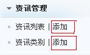
1.单击资讯列表后的添加按钮，
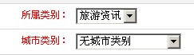
2.所属类别默认会有一个旅游资讯分类，您可以添加到此分类中，也可以单击资讯类别后台添加按钮添加分类。添加成功后再回到资讯添加。
3.填写标题，状态，您可以选择状态，图片推荐需要上传一张92*68的图片，也就是带小图片介绍的资讯。
4.填写排序，排序中的数字填写的越大，资讯越靠前。
5.内容填写，您可以使用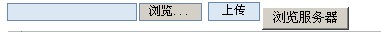上传功能上传图片到编辑框内，也可以浏览服务器，选择已经上传的图片到编辑框内。通过浏览服务器您也可以管理您服务器上的图片。
6.提交，完成资讯添加。
2.广告管理
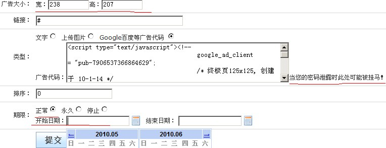
1.广告不能添加，只能管理。
2.标题，就是广告的标题，建议填写详细的标题。
3.广告大小，此大小必须正确设置，设置不正确将影响到页面布局。
4.链接，广告所指向的链接。{webpath}表示网站根目录。
5.类型，广告分为文字，上传图片，Google百度代码三类。Google百度代码允许添加javascript类型的代码，当您的后台路径和后台密码泄露时，此处将会导致您的网站被挂马，所以建议您的后台密码尽量复杂。
6.期限，正常，永久，停止，您可以选择广告的期限，正常状态下需要选择一个时间段，超过此时间段，您的广告将不显示。
3.专题管理
1.从un.zhuna.cn获取最新专题. → 2.通过FTP上传到站点Special目录中. → 3.在此获取专题信息并打开.
2.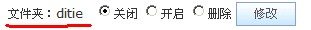当您从un.zhuna.cn下载专题，并且通过ftp上传到网站，special文件夹中后，您在此就可以看到文件夹名称及其专题状态，默认状态都是管理，您需要点击开启后再点击修改按钮，就可以打开此专题。
3.您可以修改专题名称和专题链接地址。
4.友情链接
1.您可以添加或者修改或者删除友情链接。友情链接分为图片链接和文件链接诶两类。
2.友情链接有标题，当您的友情链接类型为文字时，标题就是您的链接名称。链接，就是单击标题或者图片后所链接到的页面，可以是网站内链接或者外部链接，外部链接必须带http://前缀。
3.类型，文字，上传图片，外部图片链接。上传图片和外部图片链接的规格都是88*31 。
4.排序，数字越大越靠前。
5.期限，正常状态可以添加期限时间段。
4.首页Flash
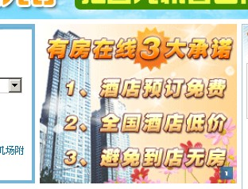
1.添加后就在首页显示。
2.图片规格为 248*200 。链接为链接到的页面，外部链接时必须带http://前缀。
5.网站更新
1.此功能是为了您的网站更新方便，保证您的网站不存在漏洞和问题。
2.网站更新分为手动更新和自动更新，自动更新您只要单击我要更新就可以更新您的网站，当弹出要求您上un.zhuna.cn手动更新时，您必须先上un.zhuna.cn更新此更新后才可以更新其他的更新，并且不可以一次更新两个手动更新，一次更新两个以上的手动更新将会导致您的网站打不开，并且不可修复。
3.在网站设置中有自动更新选项，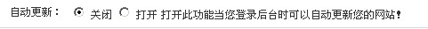当您选择自动更新后，您每次登录您的后台就会自动检测您的版本是否是最新版本，并且提示您更新。
4.网站更新将直接修改您的网站文件，操作比较危险，您需要在网络良好的状态下进行此操作。如果发现您的网站在更新后有的功能不能使用，有的页面打不开的情况下，请您及时联系住哪网技术，寻求解决办法。
6.网站设置
注意：网站设置必须在您单击提交后才可以起作用。
1.此页面设置您网站重要参数。
2.网站安装目录，网站名称，站点关键字，网站状态是您的网站的基本信息，非常重要。
3.网站关闭是将显示网站状体说明。
4.非法关键字，此功能主要用来过滤您的资讯内容中的非法字，因为您的空间会因为您的网站存在非法字而造成页面打不开的情况。如[妈妈的=哈哈哈|]妈妈的就是非法的词组，=号表示把妈妈的替换，=号后面表示将妈妈的替换成哈哈哈词组，|表示分割符，是两个必要的。
5.首页选项卡设置的是您的网站首页热门城市酒店。如图所示，您可以拖动城市名称而修改顺序，也可以双击城市名，修改城市的前台显示名。注意，您修改完后记得要单击页面下面的提交才能完成修改操作。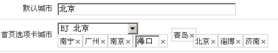
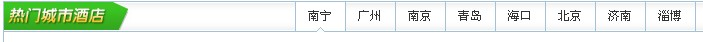
6.缓存功能对于您的网站打开速度有极大的改善，强烈建议您打开，并且把缓存更新时间设置为20-80天之间。缓存名您使用默认值就可以。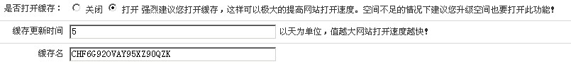
7.测速功能，此功能主要帮助您来判断从您的服务器到zhuna服务器的链接速度。当在本地测试时，显示的时间为从您的电脑到zhuna服务器的链接速度，没有意义，因为别人不在本地浏览您的网站。当您单击测试后，将会显示时间，请您选择最短的时间做为您的接口地址，默认会为您选择上最短时间接口。此功能需要较长时间，请您耐心等待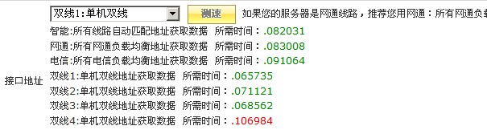
8.伪静态页面前置名称设置是当您的服务器支持伪静态时才能起作用的。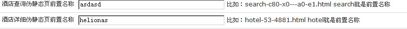
9.是否显示客人上传图片：设置的是前台酒店内页酒店图片中客人实拍酒店图片是否显示。当您选择不显示的时候您网站的酒店内页将不显示客人实拍酒店图片。 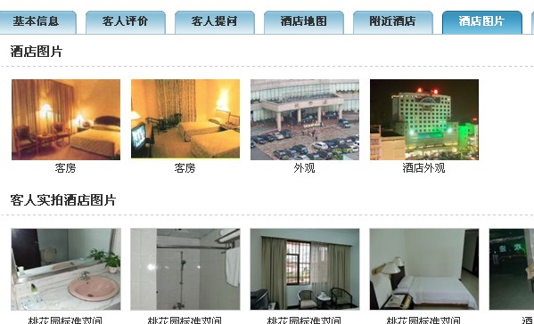
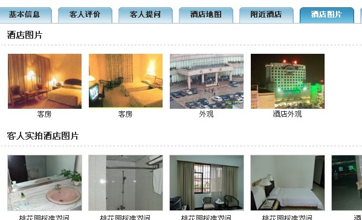
10.伪静态规则，当你的服务器或者空间支持伪静态的时候才起作用，当您打开伪静态时，将会把伪静态规则中的规则生产httpd.ini并且保存到你网站的根目录中。当您有主站，并且此程序是放在2级目录中时，如果您的主要也用伪静态，那么系统将会提示您修改您原有的httpd.ini名称。此时您需要将您原来的httpd.ini中的规则复制到伪静态规则编辑框中并且再次单击提交.当您切换伪静态状态后，您必须在清除缓存功能中把您网站的缓存清理下，这样前台页面链接才正确。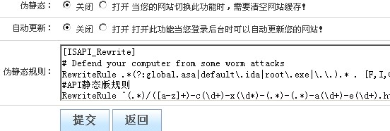
7.管理员
1.只有默认管理员才可以进行此操作，操作包括，添加，修改，删除，但是默认管理员不能删除自己。并且可以给新添加的管理员编辑权限。
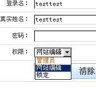
7.清除缓存
缓存路径显示的是您网站缓存的路径，一般都在Database下，当伪静态打开或者关闭时，必须清除缓存，当您发现您网站有的信息不正确时，您也可以尝试清楚缓存。
通过以下方式您可以获得更好的技术支持
'===================================
'联盟专员QQ：80049655
'联盟专员QQ：80049659
'技术支持QQ：80076356
'===================================